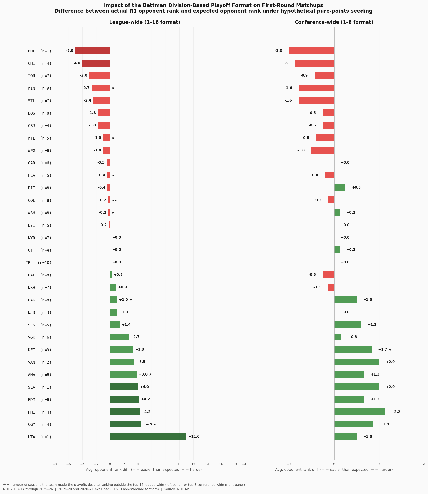
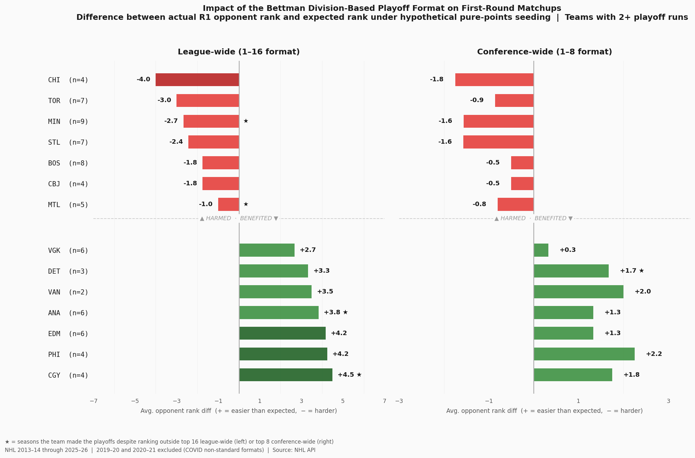

Every single April, NHL fans discuss a common topic: their shared hatred of the NHL playoff format. Connor McDavid described the playoff race in the Pacific Division this year a “pillow fight,” when other divisions saw brutal fights to the end of the season for that coveted final spot. And apologies for making things about the Leafs, as always, but can we really compare Mitch Marner’s playoff success in his first season in Vegas to his Toronto runs that were plagued by misery at every turn when the teams they faced (at least in the first two rounds) were drastically different? As a Leafs fan, I’m biased, so I wanted to see what the real answer was, not just from my instincts, but from the real, true data. This question can really be distilled into: Which team has the greatest right to sue Gary Bettman for introducing the conference-based playoff format in 2013-14?
And guess what? Leafs fans are truly and absolutely vindicated. That’s right, the Leafs are the third-most-screwed team by the current playoff format, only after Buffalo and Chicago—though Buffalo’s top-rank doesn’t show the fact that they’ve only made the playoffs once, so their troubles with the format haven’t been as prolonged. Meanwhile, the Toronto Maple Leafs have made the playoffs seven times since then. Of those seven, each and every one of them has been against teams that are better than or equal to their expected opponent-seed using league-wide standings. They have had absolutely no luck whatsoever in terms of drawing an opponent who is slightly lower than expected. This, compared to Calgary, for example, whose seven playoff opponents have all been worse than expected using league-wide standings. Or Edmonton, where 4 out of their past 6 have been worse than expected.
In other words, Chicago, Toronto, and Minnesota all deserve to be the biggest Bettman haters because of their prolonged issues with playing teams that are better than they should be in the first round. And Calgary, Philadelphia, and Edmonton should be absolutely kissing the ground Bettman walks on… at least since 2013-2014. Though of course, this only accounts for first-round opponents.

To calculate expected-opponent seed, I calculated what their expected league-wide opponent seed would be if it was a general 1-16 league-wide seeding format. For example, if a team ranked fourth, their expected league-wide opponent seed would be 13th out of 16. I did the same for conferences; if a team was ranked second in their division, they could expect to play the 7th out of 8 teams in their conference. I then compared this to the actual league-seed and conference-seed of their first round opponent. A number of negative three in the league-wide comparison and negative one in the conference-wide comparison, for example, means the team is playing an opponent that is three seeds higher than expected in league-wide standings and one-seed higher than expected in the conference-wide standings. This is less than ideal. A positive number, though, means the team is playing an opponent that is lower in the standings than would be expected in a different playoff format.
Here is a summary figure, which only includes teams with at least two playoff runs (to mitigate the issue of one-off crazy instances like Utah-Vegas this year that hugely skewed Utah to be the number one rank) and shows the top 7 and bottom 7 teams.
